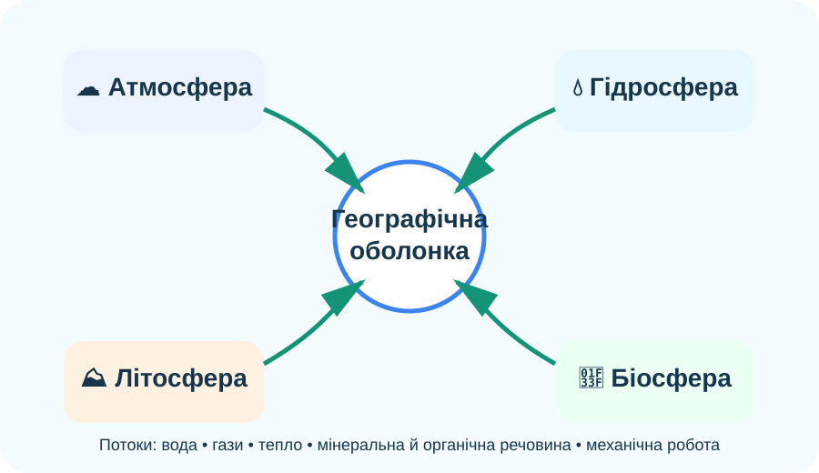
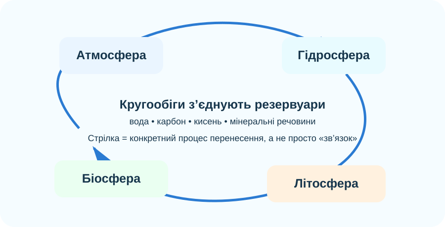

1. Місія: де закінчується одна оболонка і починається інша?
Клікніть по всіх компонентах, які бачите в реальному ландшафті
Спроба: чи можна в реальному природному комплексі «вимкнути» одну оболонку?
Доказова рамка
Для кожного зв’язку шукайте не просто «вони взаємодіють», а механізм перенесення: вода, тепло, гази, мінеральні речовини, органічна речовина або механічна робота.

.jpg)

2. Квест зв’язків: побудуйте причинний міст
Ситуація: сильний дощ випав на гірський схил із рідкою рослинністю. Натискайте етапи в причинній послідовності.
Парні зв’язки
Оберіть найкращий механізм для пари атмосфера ↔ біосфера.
Важлива межа висновку
Якщо Ви бачите кореляцію між двома явищами, це ще не доводить причинність. Для причинного зв’язку потрібен механізм, часовий порядок і відсутність кращого альтернативного пояснення.
3. Симулятор каскаду: що станеться, якщо змінити один компонент?
Модель: на схилі зменшується рослинний покрив. Пересувайте повзунок і прогнозуйте наслідки. Це навчальна модель напрямку змін, а не реальні відсотки.
Перехоплення опадів / укріплення ґрунту
Ризик поверхневого стоку й ерозії
Доказове питання
Чи можна з цієї моделі зробити висновок: «вирубування завжди спричинить повінь»?
4. Кругообіг як доказ цілісності системи

Власна навчальна схема. Стрілки показують не «місця», а потоки речовини між компонентами.
Знайдіть перенесення між оболонками
Який процес прямо переносить воду з біосфери до атмосфери?
Складніше: назвіть процес, який пов’язує атмосферу, гідросферу й літосферу одночасно.
Реальні дані NASA: «Земля як система»
NASA розглядає атмосферу, гідросферу, біосферу, кріосферу й геосферу як взаємопов’язані підсистеми. Сенс системного підходу — досліджувати не лише кожну частину, а й потоки речовини та енергії між ними.
Відкрити матеріал NASA ↗Коротке відео: вуглець рухається через усю систему
NASA eClips: вуглець переходить між атмосферою, океаном, живими організмами, ґрунтом і породами. Під час перегляду випишіть щонайменше три переходи між оболонками.
5. Тепер теорія: що Ви вже фактично довели
Географічна оболонка
Це цілісна оболонка Землі, у межах якої активно взаємодіють нижня частина атмосфери, верхня частина літосфери, вся гідросфера та біосфера. Її межі не є різкими лініями.
Основні властивості
Цілісність — зміна компонента може викликати каскад наслідків. Кругообіг речовин та енергії з’єднує компоненти. Ритмічність проявляється в добових, сезонних та інших повторюваних змінах.
Чому межі умовні
Взаємодії слабшають поступово. Водяна пара, пил і живі організми трапляються на різних висотах і глибинах, тому географічна оболонка — не «шар із чіткою стелею та підлогою».
6. CER: чи справді географічна оболонка — єдина система?
Твердження (Claim): дайте відповідь одним реченням.
Докази (Evidence): наведіть два конкретні механізми взаємодії з уроку.
Міркування (Reasoning): поясніть, чому ці докази підтримують твердження, а не просто описують явища.
7. Домашнє завдання
§51. Створіть міні-схему одного реального природного комплексу своєї місцевості: 4 компоненти → щонайменше 5 стрілок взаємодії → один прогноз «що зміниться, якщо…». Для кожної стрілки підпишіть механізм: вода, газ, тепло, речовина, органіка або механічна робота.